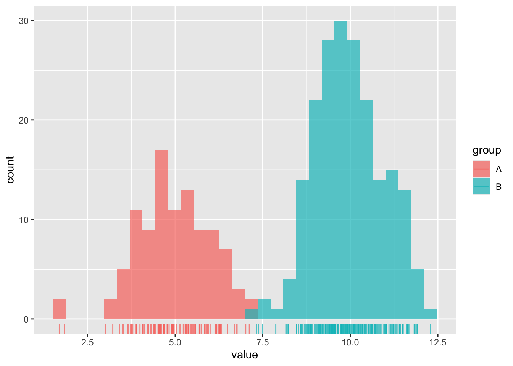
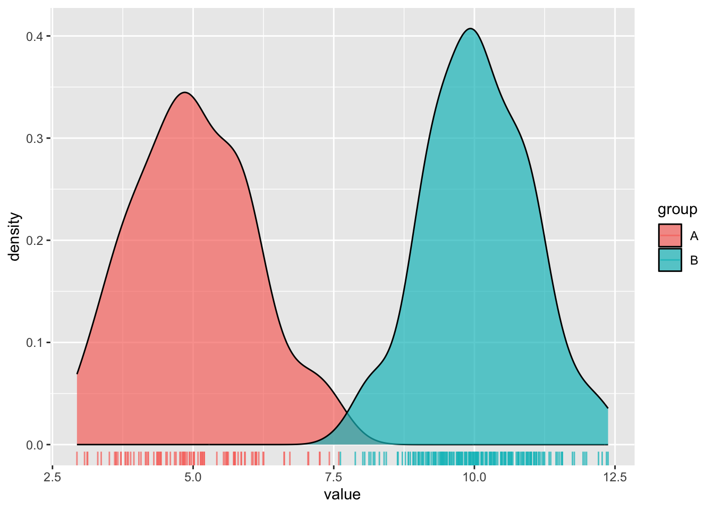
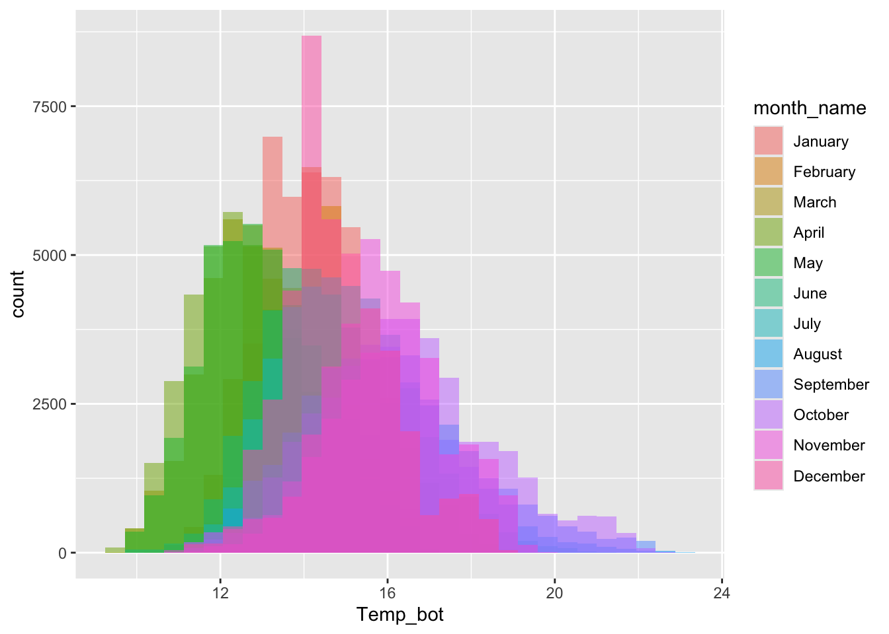
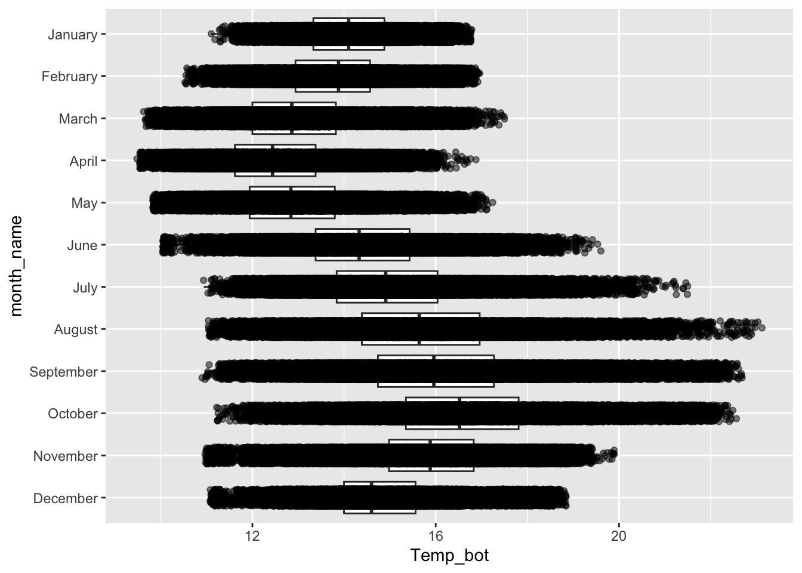
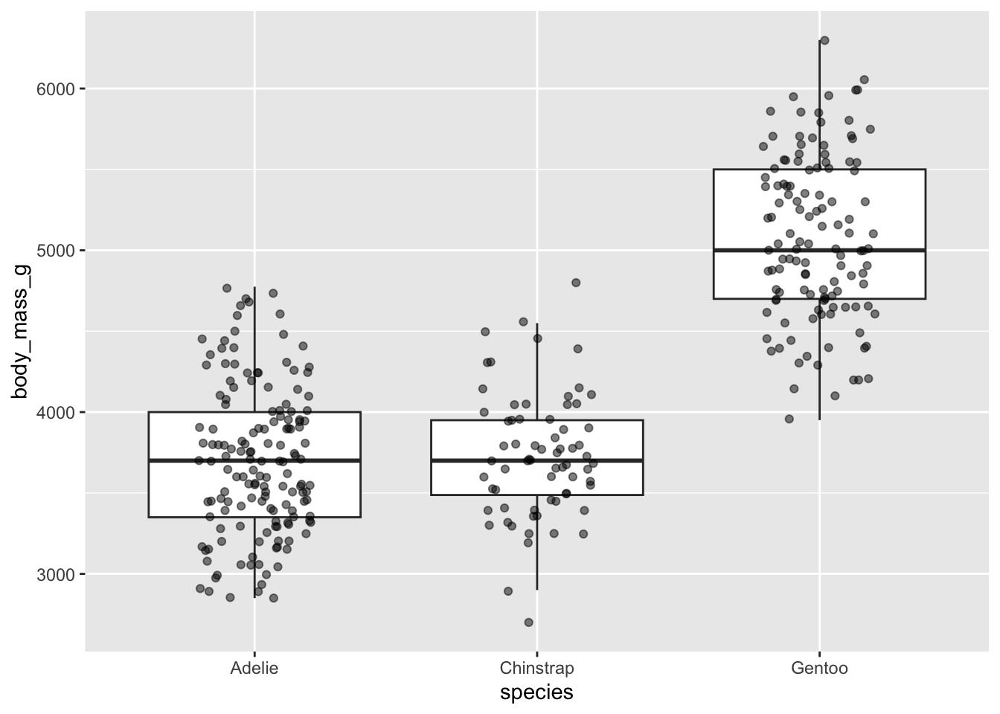

##~~~~~~~~~~~~~~~~~~~~~~~~~~~~~~~~~~~~~~~~~~~~~~~~~~~~~~~~~~~~~~~~~~~~~~~~~~~~~~
## setup ----
##~~~~~~~~~~~~~~~~~~~~~~~~~~~~~~~~~~~~~~~~~~~~~~~~~~~~~~~~~~~~~~~~~~~~~~~~~~~~~~
#..........................load packages.........................
library(tidyverse)
library(naniar)
library(ggridges)
library(gghighlight)
library(ggbeeswarm)
library(palmerpenguins) # for some minimal examples
#..........................import data...........................
mko <- read_csv(here::here("week2", "data", "mohawk_mooring_mko_20250117.csv"))
##~~~~~~~~~~~~~~~~~~~~~~~~~~~~~~~~~~~~~~~~~~~~~~~~~~~~~~~~~~~~~~~~~~~~~~~~~~~~~~
## wrangle data ----
##~~~~~~~~~~~~~~~~~~~~~~~~~~~~~~~~~~~~~~~~~~~~~~~~~~~~~~~~~~~~~~~~~~~~~~~~~~~~~~
mko_clean <- mko |>
# keep only necessary columns ----
select(year, month, day, decimal_time, Temp_bot, Temp_top, Temp_mid) |>
# convert year, month, day & decimal_time cols to a date_time col ----
# (not totally necessary for our plots, but helpful to know!)
mutate(
date_time = make_datetime(year, month, day, tz = "America/Los_Angeles") + # find tz identifiers: https://en.wikipedia.org/wiki/
seconds(decimal_time * 86400) # decimal_time is fraction of day; 86400 seconds in a day
) |>
# add month name by indexing the built-in `month.name` vector ----
mutate(month_name = month.name[month]) |>
# replace 9999s with NAs ----
naniar::replace_with_na(replace = list(Temp_bot = 9999,
Temp_top = 9999,
Temp_mid = 9999)) |>
# select/reorder desired columns ----
select(date_time, year, month, day, month_name, Temp_bot, Temp_mid, Temp_top)
##~~~~~~~~~~~~~~~~~~~~~~~~~~~~~~~~~~~~~~~~~~~~~~~~~~~~~~~~~~~~~~~~~~~~~~~~~~~~~~
## explore missing data ----
##~~~~~~~~~~~~~~~~~~~~~~~~~~~~~~~~~~~~~~~~~~~~~~~~~~~~~~~~~~~~~~~~~~~~~~~~~~~~~~
# Missing data can have unexpected effects on your analyses
# It's important to explore your data for missing values so that you can decide if and how to handle them
# Data loggers can be prone to missingness (e.g. full memory, dead batteries, replacement logger)
# We can use {naniar} to explore the frequency and patterns in missing data
# Below is a short example of some naniar tools for doing so
# Check out The Missing Book (https://tmb.njtierney.com/) by Nick Tierney and Allison Horst for some great guidance
#..........counts & percentages of missing data by year..........
see_NAs <- mko_clean |>
group_by(year) |>
naniar::miss_var_summary() |>
filter(variable == "Temp_bot")
#...................visualize missing Temp_bot...................
bottom <- mko_clean |> select(Temp_bot)
missing_temps <- naniar::vis_miss(bottom)
Note
This key follows the visualizing distributions slides. Please be sure to cross-reference the slides, which contain important information and additional context!
Setup
Histograms & Density Plots
- great for visualizing the distribution of a numeric variable with one to a few groups
Distinction
- Histograms show the counts (frequency) of values in each range (bin), represented by the height of the bars.
- Density plots show the relative proportion of values across the range of a variable. The total area under the curve equals 1, and peaks indicate values are more concentrated. Density plots do not show the absolute number of observations.
#.....................create some dummy data.....................
dummy_data <- data.frame(value = c(rnorm(n = 100, mean = 5),
rnorm(n = 200, mean = 10)),
group = rep(c("A", "B"),
times = c(100, 200)))
#............................histogram...........................
ggplot(dummy_data, aes(x = value, fill = group)) +
geom_histogram(position = "identity", alpha = 0.7) +
geom_rug(aes(color = group), alpha = 0.75)
#..........................density plot..........................
ggplot(dummy_data, aes(x = value, fill = group)) +
geom_density(alpha = 0.7) +
geom_rug(aes(color = group), alpha = 0.75)

Avoid plotting too many groups
#..................histogram with all 12 months..................
mko_clean |>
mutate(month_name = factor(month_name, levels = month.name)) |>
ggplot(aes(x = Temp_bot, fill = month_name)) +
geom_histogram(position = "identity", alpha = 0.5)
#................density plot with all 12 months.................
mko_clean |>
mutate(month_name = factor(x = month_name, levels = month.name)) |>
ggplot(aes(x = Temp_bot, fill = month_name)) +
geom_density(alpha = 0.5)

Consider faceting (small multiples)
#...................histogram faceted by month...................
mko_clean |>
mutate(month_name = factor(month_name, levels = month.name)) |>
ggplot(aes(x = Temp_bot)) +
geom_histogram() +
facet_wrap(~month_name)
#..................density plot faceted by month.................
mko_clean |>
mutate(month_name = factor(month_name, levels = month.name)) |>
ggplot(aes(x = Temp_bot)) +
geom_density(fill = "gray30") +
facet_wrap(~month_name)

Consider plotting fewer groups + update colors + modify bin / band widths
- histograms & density plots are best suited for visualizing the distribution of one to a small number of groups
- consider your scale of interest e.g. does a bin width of 1 (°C) make sense for our histogram? Does your density plot’s bandwidth show the true underlying data distribution shape while reducing noise?
#..................histogram with fewer months...................
mko_clean |>
mutate(month_name = factor(month_name, levels = month.name)) |>
filter(month_name %in% c("April", "June", "October")) |>
ggplot(aes(x = Temp_bot, fill = month_name)) +
geom_histogram(position = "identity", alpha = 0.5, color = "black", binwidth = 1) +
scale_fill_manual(values = c("#2C5374", "#ADD8E6", "#8B3A3A"))
#.................density plot with fewer months.................
mko_clean |>
filter(month_name %in% c("April", "June", "October")) |>
ggplot(aes(x = Temp_bot, fill = month_name)) +
geom_density(alpha = 0.5, adjust = 0.5) +
scale_fill_manual(values = c("#2C5374", "#ADD8E6", "#8B3A3A"))

Question:
Why are the months in our density plot still in chronological order, despite not reordering them using mutate() (as we do for our histogram)?
Overlay histogram & density plots as a sanity check
Question:
What should you carefully consider when checking the smoothing asumptions of your density curve against a histogram?

Ridgeline plots
- great for comparing distribution shapes of a numeric variable across many ordered groups
#......................basic ridgeline plot......................
mko_clean |>
mutate(month_name = factor(month_name, levels = rev(month.name))) |> # alt, within ggplot: `scale_y_discrete(limits = rev(month.name))`
ggplot(aes(x = Temp_bot, y = month_name)) +
ggridges::geom_density_ridges(rel_min_height = 0.01, scale = 3) # `rel_min_height` sets threshold for relative height of density curves (any values below threshold treated as 0); `scale` controls extent to which different densities overlap
#....................fill with color gradient....................
mko_clean |>
mutate(month_name = factor(month_name, levels = rev(month.name))) |>
ggplot(aes(x = Temp_bot, y = month_name, fill = after_stat(x))) + # `after_stat(x)` tells ggplot: "Don't use the original data for coloring. Instead, wait until you've drawn the density curve, then color each part of that curve based on its x-axis position (Temp_bot)." This creates a color gradient that flows along the curve from cold to warm temperatures.
ggridges::geom_density_ridges_gradient(rel_min_height = 0.01, scale = 3) +
scale_fill_gradientn(colors = c("#2C5374","#849BB4", "#D9E7EC", "#EF8080", "#8B3A3A"))

Boxplots
- great for summarizing the distribution of a numeric variable for multiple to many groups
- consider flipping your axes when you have long labels
- consider highlighting a group(s) of interest to focus attention
#...................boxplot with all 12 months...................
ggplot(mko_clean, aes(x = month_name, y = Temp_bot, fill = month_name)) +
geom_boxplot() +
scale_x_discrete(limits = rev(month.name)) + # an alt way to reorder groups within ggplot, rather than during data wrangling
gghighlight::gghighlight(month_name == "October") +
coord_flip() +
theme(legend.position = "none")
Question:
What are the tradeoffs between reordering groups within a ggplot (as above) vs. during the data wrangling stage (e.g. as we did for our histogram and density and ridgeline plots)?
Overlay jittered data, if appropriate
#........does not work if you have too many observations.........
ggplot(mko_clean, aes(x = month_name, y = Temp_bot)) +
geom_boxplot(outlier.shape = NA) + # remember to remove outliers!
geom_jitter(alpha = 0.5, width = 0.2) +
scale_x_discrete(limits = rev(month.name)) + # an alt way to reorder groups within ggplot, rather than during data wrangling
coord_flip()
#...........but great when you have fewer observations...........
ggplot(penguins, aes(x = species, y = body_mass_g)) +
geom_boxplot(outlier.shape = NA) + # remember to remove outliers!
geom_jitter(alpha = 0.5, width = 0.2) 

Beeswarm plots as an alternative

Dodge when you have an additional grouping variable
Violin plots
- great for visualizing the shape of the distribution of a numeric variable for multiple to many groups
- consider overlaying another chart type for added context